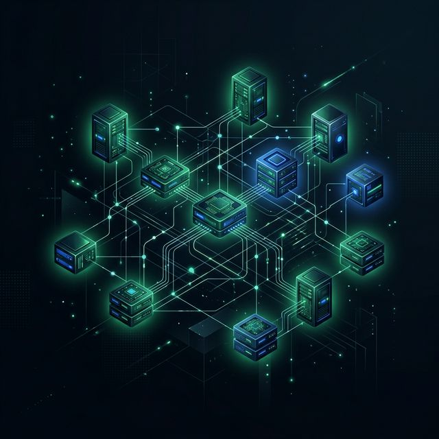

Introduction to the Agentic Era
The landscape of artificial intelligence has definitively transitioned from conversational
interfaces to autonomous, agentic systems capable of executing complex, multi-step workflows. As generative
models have evolved in their reasoning capabilities, context retention, and tool-use proficiencies, the
primary bottleneck in enterprise and developer productivity has shifted away from mere text generation and
toward systemic, verifiable action.
The software industry is currently witnessing a generational shift, evolving from static applications toward specialized agentic platforms that function as independent digital employees rather than simple autocomplete utilities.
The Vanguard of the New Operational Era:
Among the vanguard of this new operational era are four highly distinct frameworks. While they share underlying advancements in foundational model technology, their practical implementations represent vastly different approaches to human-computer interaction, task delegation, and local system governance.
- Claude Cowork: Reimagines the desktop as a shared collaborative workspace for knowledge workers, emphasizing operational transparency, steerability, and file-centric tasks.
- Claude Code: Embeds a highly specialized, synchronous engineering agent directly into the developer terminal, designed for rapid, iterative software creation and localized repository manipulation.
- OpenAI Codex: Having evolved from a rudimentary code-suggestion engine into a cloud-native autonomous worker, champions the asynchronous delegation of long-horizon engineering tasks within highly secure, isolated sandboxes.
- OpenClaw: Operates as a sovereign, open-source personal AI operating system, aggressively expanding its reach into messaging platforms and persistent, localized background automation.
Understanding the structural differences, memory management systems, security sandboxing techniques, and
optimal use cases for each of these four tools is absolutely critical for organizations seeking to integrate
agentic AI into their operations without exposing themselves to unmitigated cyber risks. This comprehensive
report provides an exhaustive, nuanced dissection of these four platforms, offering strategic analysis of
their technical foundations, economic models, and practical deployments in the contemporary enterprise
environment.
The Evolutionary Trajectory of Agentic Software
To fully contextualize the capabilities of these platforms, it is necessary to examine the historical trajectory that led to their development by early 2026.
-
August 2021: The Autocomplete Era
The conceptual foundation for AI-assisted programming was laid with the introduction of the original OpenAI Codex, a fine-tuned descendant of GPT-3 that translated natural language into code. This early model functioned primarily as the engine behind GitHub Copilot's autocomplete suggestions, fundamentally altering how programmers approached repetitive boilerplate tasks. However, the 2021-era models were inherently limited by their architecture; they operated reactively, providing inline suggestions without possessing a broader understanding of repository-wide architecture, and they frequently produced syntactically correct but functionally flawed code.
-
2023–2025: The ReAct Paradigm Shift
Between 2023 and 2025, the paradigm shifted from reactive suggestion to autonomous action. The release of advanced reasoning models capable of executing the ReAct (Reasoning and Acting) framework allowed AI systems to pause, evaluate their environment, select an appropriate tool from an available index, execute the tool, and ingest the output before proceeding. This mechanism enabled the creation of the first true "agents."
By 2025, the distinction between a conversational chatbot and an autonomous agent had crystallized. Chatbots require continuous, prompt-by-prompt human interaction to generate text, whereas agents are designed to receive a high-level objective, formulate a multi-step execution plan, and interact with external systems—such as file directories, terminal commands, and web browsers—to achieve that objective.
-
Early 2026: The OS for Personal AI
The explosion of agentic platforms in early 2026, catalyzed by the viral adoption of the open-source OpenClaw project and the rapid release of Anthropic's Claude Code and Cowork tools, marked the beginning of what industry leaders describe as the "operating system for personal AI".
The enterprise software industry has rapidly adapted to this new reality, recognizing that employees will soon be supercharged by teams of frontier, specialized, and custom-built agents that they deploy and manage. This shift has profound implications for software engineering, project management, and corporate security.
Claude Cowork: Governed Enterprise Knowledge Orchestration
Claude Cowork represents Anthropic’s strategic initiative to translate the powerful, autonomous capabilities
of developer-focused agents into a secure, highly accessible format for non-technical enterprise users.
- Desktop Native Limitations: Launched as a research preview available exclusively to paid tier subscribers—including Pro, Max, Team, and Enterprise plans—Cowork operates via the localized Claude Desktop applications for macOS and Windows. Notably, the Windows version requires the x64 architecture and does not currently support arm64 systems, while the platform as a whole is fundamentally tethered to the desktop environment, remaining unavailable on web or mobile interfaces, save for the ability of Pro and Max users to message the agent from a mobile app while their desktop application remains active.
- Persistent Collaboration Space: Unlike traditional chat interfaces where interaction is strictly conversational and inherently ephemeral, Cowork acts as a continuous collaborator on a shared, persistent set of files and documents. The system was designed to bridge the gap for less tech-savvy individuals who require the multi-step reasoning of tools like Claude Code but lack the command-line proficiency to operate terminal-based agents.
Non-Technical Task Delegation
Once a user assigns a complex, multi-step, non-technical task, the system autonomously generates a strategic execution plan. It subsequently operates in the background, reading relevant documents, conducting targeted research, asking necessary follow-up questions, and synthesizing tangible deliverables such as formatted spreadsheets and Word documents. Example tasks include:
- Analyzing a dense, 45,000-word book manuscript.
- Summarizing fragmented calendar schedules.
- Compiling complex project management reports.
The architectural philosophy underpinning Cowork relies heavily on the concept of "steerability" and transparent governance. While it mimics the autonomous progression of a developer tool, it is explicitly designed to pause and request human authorization before taking significant, state-altering actions.
This allows project managers, operations personnel, and domain experts to course-correct the workflow precisely
when it matters most, ensuring that the AI does not deviate from business objectives during long-horizon
tasks. This built-in, mandatory governance makes Cowork highly attractive for enterprise environments where
strict oversight is required, such as legal research, project management offices (PMOs), and advanced data
analytics. Analysts predict that this scoped action, specifically tailored to the document-centric work that
dominates knowledge roles, will drive massive enterprise adoption.
Technically, the operation of Cowork requires an active, continuous internet connection, and the desktop application must remain open and the host computer awake to maintain session persistence. In its current preview state, the platform imposes several notable restrictions:
- It lacks native cross-session memory outside of specific, bounded project scopes.
- It does not yet support the sharing of chat sessions or generated artifacts with other users.
However, Cowork exhibits remarkable extensibility; it can utilize existing external information connectors to interface with corporate databases and applications, and it can pair directly with the Claude extension in Google Chrome to autonomously execute tasks requiring live browser access. This parallel task assignment capability allows a single human operator to orchestrate multiple background workflows simultaneously, effectively functioning as a manager of a digital team. It is a testament to the power of agentic tools that Anthropic's own engineering team was able to build the entirety of the Claude Cowork platform in merely ten days using Claude Code.
Claude Code: Synchronous Terminal-Native Engineering
While Cowork targets the broader enterprise and document-centric workflows, Claude Code represents Anthropic’s flagship autonomous agentic tool engineered explicitly for software developers.
Operating directly within the developer's terminal, Claude Code is designed as a composable, Unix-style utility. By functioning as a standard command-line interface (CLI) tool, it allows engineers to seamlessly pipe data into it, run multiple parallel instances across different directories, and integrate its capabilities deeply into automated Continuous Integration and Continuous Deployment (CI/CD) pipelines.
Subagent Orchestration Architecture
Rather than relying on a single, monolithic large language model call to resolve an engineering prompt, a single user request to Claude Code triggers a "Main Agent" that functions as a central orchestrator. This orchestrator dynamically spins up multiple specialized subagents, which can operate in parallel. These include:
- Explore Agents: Tasked with traversing the repository and analyzing module dependencies.
- Plan Agent: Responsible for researching and documenting a strategic approach in a dedicated "plan mode."
- Execute Phase: Implements the necessary code modifications.
In rigorous, real-world development environments, Claude Code has demonstrated the ability to execute highly parallelized operations; in one documented instance, the system made 92 distinct LLM calls in precisely 13 minutes, utilizing seven parallel subagents to meticulously investigate intricate codebase dependencies before executing a single line of corrective code.
Governance and Memory Management
Claude Code manages its operational context through a dedicated CLAUDE.md file located within the root directory of a project. This plaintext file acts as a continuous set of operational guidelines, explicitly detailing coding conventions, architectural patterns, and project-specific testing protocols that the agent must adhere to.
To manage the immense computational and financial cost associated with processing entire repositories repeatedly, Anthropic implemented a critical optimization known as Prefix Caching. By caching immutable system instructions and tool descriptions on the backend, the system achieves a highly efficient 92% token reuse rate, minimizing the latency and financial burden of repeated context loading during extended terminal sessions. Furthermore, a feature known as Autocompact is employed to automatically summarize lengthy developer conversations, maintaining historical continuity and operational context without overflowing the model's maximum context window limit.
- Crash Persistence: Data persistence and configuration are managed via localized storage utilizing the `~/.claude/` directory. It utilizes JSONL formatting for real-time persistence, which crucially prevents data loss in the event of terminal crashes.
- Rewind Capability: Stores file history snapshots keyed by content hash, enabling one-click undos via the `/rewind` command if an agentic execution yields undesirable results.
Ephemeral Agent Teams
Anthropic has also pioneered the concept of "Agent Teams" within the Claude Code ecosystem. These teams represent a novel architectural paradigm: ephemeral, code-defined agents.
Unlike durable agents that possess persistent identity and cross-session memory, Claude Agent Teams are ephemeral by design. A developer describes a team required for a specific task—such as reviewing a pull request or debugging a complex service—the team is instantiated, completes the task in parallel, and then entirely disappears, leaving no residual memory across subsequent sessions.
This ephemeral nature makes them incredibly fast to create and economically cheap to experiment with, perfect for one-off engineering explorations.
Remote Extensibility: Claude Code Channels
A significant evolution in the accessibility of Claude Code is the introduction of Claude Code Channels, a
feature released under research preview that allows remote interaction with local terminal sessions. Utilizing
Model Context Protocol (MCP) plugins, Channels establishes a secure, two-way communication link between a
developer’s local Claude Code session (running on a laptop or workstation) and mobile messaging applications
such as Telegram and Discord.
- Workflow Alteration: Enables engineers to trigger code reviews, initiate complex build processes, transcribe podcast audio, or query repository health remotely from a mobile device while away from their primary workstation.
- Strict Security Protocols: To mitigate the severe inherent security risks of exposing local terminal execution to external messaging networks, Anthropic enforces strict sender allowlists tied to cryptographic pairing codes. When a user attempts to connect, the bot generates a code that must be manually approved within the active local terminal session, ensuring that only explicitly authenticated user IDs can push messages and trigger commands.
The development of Channels highlights a broader competitive posture within the industry. The feature was
explicitly developed as a direct countermeasure to the surging popularity of OpenClaw, a rival open-source
project that utilized WhatsApp and Telegram to control local agents. By providing a similar remote-control
capability wrapped in Anthropic's enterprise-grade security architecture, the company aims to capture the
developer demographic that desires mobile flexibility without compromising local system integrity.
OpenAI Codex: Cloud-Native Asynchronous Autonomy
OpenAI Codex has undergone a profound metamorphosis since its initial introduction, evolving from the reactive autocomplete engine that powered the earliest iterations of GitHub Copilot into a proactive, cloud-based autonomous software engineering agent seamlessly integrated into the broader ChatGPT ecosystem.
This transformation reflects a fundamental shift in OpenAI's philosophy regarding AI-assisted development: moving developers away from real-time "pair programming" and toward the asynchronous management of fully autonomous digital employees.
GPT-5 Engine Infrastructure
The contemporary Codex infrastructure is powered by the GPT-5 series of models, specifically optimized variants such as:
- GPT-5.1-Codex
- GPT-5.2-Codex
- GPT-5.3-Codex
- GPT-5.3-Codex-Spark: To address demands for real-time interactive coding, OpenAI introduced a lower-latency variant deployed explicitly on specialized Cerebras hardware, which operates approximately 15 times faster than traditional Codex deployments.
Asynchronous Cloud Sandboxing
The defining operational characteristic of the modern Codex system is its asynchronous autonomy and its absolute reliance on secure, cloud-based execution.
- Isolated Worktrees: When a developer issues a high-level architectural prompt or links a complex GitHub issue, Codex does not execute commands directly on the user's local hardware. Instead, the task is provisioned within a secure, isolated cloud sandbox virtual machine that is dynamically preloaded with a complete clone of the developer's repository.
- 192K Core Loop: Within this isolated cloud environment, the core codex-1 agent leverages a massive context window of approximately 192,000 tokens to ingest the codebase, write new features, execute test suites, and iteratively debug its own output until all tests pass successfully. On internal benchmarking tasks, this autonomous workflow achieves an impressive 70% accuracy rate.
A critical architectural feature enabling this continuous, long-horizon operation is Native Compaction. As the Codex agent approaches its 192,000-token context limit during complex operations, its Native Compaction algorithms automatically prune non-essential conversational history and intermediate reasoning steps while meticulously preserving the vital architectural context and logic pathways. This sophisticated memory management allows Codex to maintain uninterrupted focus on systemic refactoring tasks for periods exceeding 24 hours, navigating across millions of lines of code without suffering from context collapse.
Latency and Verifiable Transparency
Because Codex operates exclusively in the cloud, its workflow is inherently asynchronous. Tasks assigned to the agent are not instantaneous, typically requiring anywhere from one to thirty minutes to execute depending on their computational complexity. Currently, developers cannot intervene mid-task to provide course correction; they must wait for the agent to complete its operational loop or manually cancel the execution.
Once the task is finished, Codex presents the developer with a highly structured, verifiable package encompassing clean code diffs, terminal execution logs, and detailed citations of test results, frequently submitting a completed pull request directly to the repository for human review.
To bridge the operational gap between remote cloud execution and local development environments, OpenAI introduced the Codex App, available as a native desktop application for both Windows and macOS. This application provides a dedicated, localized surface for developers to run multiple Codex agents in parallel, review clean diffs extracted from isolated cloud worktrees, monitor agent progress, and execute reusable automation skills.
Furthermore, OpenAI has heavily prioritized ecosystem extensibility for enterprise environments. In late 2025, Codex achieved general availability with the introduction of deep Slack integrations, allowing non-technical team members to query repositories or delegate tasks to the Codex agent directly from team communication channels. Simultaneously, the release of the Codex SDK allowed enterprise architects to embed the agent natively into proprietary internal workflows.

OpenClaw: The Sovereign Agent Operating System
Standing in stark ideological and architectural contrast to the proprietary, tightly controlled, and highly
governed ecosystems of Anthropic and OpenAI is OpenClaw. Originally developed under the monikers Clawdbot and Moltbot, OpenClaw is an open-source, autonomous AI agent framework that rapidly surpassed 100,000 GitHub stars in early 2026.
It is frequently described by its developers and users as the "operating system for personal AI," differentiating itself by operating entirely locally on user hardware, prioritizing absolute data sovereignty, and enabling continuous, proactive background automation.
Model-Agnostic Gateway Architecture
The fundamental architecture of OpenClaw is heavily decentralized and explicitly model-agnostic. It does not force users into a specific API ecosystem; rather, users provide their own API keys for frontier models such as Claude, GPT, or Gemini, or they can opt to run entirely localized, privacy-preserving open-weight models like MiniMax or Llama via the Ollama framework. The system architecture is defined by a strict separation of concerns:
- The Gateway Daemon: A long-lived background daemon process (running via systemd or LaunchAgent) that serves as the single source of truth for all network routing, authentication, session management, and channel connections. This gateway manages a robust set of Channel Adapters that normalize incoming data from an array of messaging applications, including WhatsApp, Telegram, Slack, Discord, Signal, and iMessage.
- Agent Runtime: Handles reasoning and execution via a sophisticated localized implementation of the ReAct paradigm.
By bridging these platforms, OpenClaw transforms messaging applications from mere communication utilities into the primary command-and-control user interfaces for complex local system interactions. For instance, a WhatsApp voice note received by the gateway is transcribed into text and routed into the agent's command queue. Clients connect to this gateway via a strictly typed WebSocket protocol.
Compact Skills Indexing
OpenClaw expands its capabilities dynamically through a highly efficient Skills System. Rather than overwhelming the selected LLM's finite context window by injecting the code for every possible tool, OpenClaw injects only a highly compact index of skill names and brief descriptions. If the agent determines a task requires interacting with a specific application, it requests the runtime to load the corresponding `SKILL.md` file from its directory on-demand.
A defining feature that elevates OpenClaw from a reactive assistant to a truly autonomous operator is its proactive Heartbeat mechanism. Unlike chatbots that remain dormant until prompted by a user, OpenClaw features a scheduled cron job trigger (defaulting to 30-minute intervals).
Upon triggering, the agent autonomously wakes up, reviews a localized `HEARTBEAT.md` checklist, and independently decides if proactive action is necessary. This allows the agent to continuously monitor external web endpoints, analyze gathering system logs, scrape websites for changes, or dispatch daily operational briefings without any human intervention whatsoever.
The Security Crisis and Nvidia NemoClaw
The integration of agentic AI directly into the local operating system introduces severe, unprecedented cyber threat vectors. The security postures of these four systems vary dramatically, and OpenClaw presents the most profound security risks, which paradoxically stem from its greatest architectural strengths.
As a fully autonomous, stateful agent running directly on local hardware, OpenClaw possesses inherent access
to sensitive user credentials, internal network topographies, and the raw filesystem. Because the system is
designed to connect directly to external messaging platforms like WhatsApp, it is highly exposed to untrusted
external input. This creates an immense vulnerability to sophisticated prompt injection attacks.
If a malicious actor sends a carefully crafted message to a WhatsApp number monitored by an OpenClaw instance, the autonomous agent could theoretically be manipulated into exfiltrating local SSH keys, executing destructive shell commands, or accessing unauthorized corporate databases on behalf of the attacker. By combining access
to sensitive data, exposure to untrusted external input, and the ability to take autonomous action, OpenClaw
effectively functions as a highly vulnerable, privileged identity within the local network.
This severe risk profile heavily restricted OpenClaw's viability in corporate and enterprise environments, prompting intervention from major infrastructure providers. At the GTC 2026 conference, Nvidia officially announced NemoClaw, an open-source security stack designed explicitly to contain and sanitize OpenClaw deployments.
Nvidia NemoClaw Sandbox
- OpenShell Runtime: Enforces strict, kernel-level sandboxing and policy-based guardrails.
- Privacy Router: Actively monitors the agent's behavior and external communications. If it detects OpenClaw attempting to send sensitive localized data to an unauthorized external endpoint, it immediately intercepts and blocks the action.
By providing this missing infrastructure layer, NemoClaw effectively domesticates the open-source framework, allowing enterprises to run autonomous, self-evolving agents securely using high-performance open models like NVIDIA Nemotron.
Economic Paradigms and Subscription Architecture
The financial architecture required to deploy and scale these agents varies significantly, heavily influencing enterprise adoption strategies.
- OpenClaw API Model: As an open-source framework, OpenClaw incurs no licensing fees; operational costs are derived entirely from the underlying compute infrastructure (if running local models via Ollama or Nemotron) or the highly granular API utilization metrics of connected frontier models.
- OpenAI Predictable Tiers: Codex is embedded directly within the broader ChatGPT subscription tiers (Pro, Team, Enterprise, and Plus), offering a highly predictable operational expenditure model. The introduction of the standalone Codex App included promotional initiatives, such as offering business users a 2x multiplier on Codex rate limits, designed specifically to encourage the widespread adoption of asynchronous agents across corporate departments.
Anthropic has structured its pricing specifically to support the heavy, continuous agentic operations demanded by Claude Code through its dynamic Pro ($20/month) and Max ($200/month) subscription tiers. Crucially, unlike traditional API-based pricing models, these subscriptions do not rely on fixed monthly token limits; instead, they operate on a dynamic consumption model governed strictly by rate limits and server activity.
The Claude Max plan is explicitly positioned for intensive, high-volume operations, offering subscribers up to 20x the usage capacity of the entry-level Pro plan. Furthermore, Max subscribers receive guaranteed priority access to Claude Opus, Anthropic's most compute-intensive model optimized for complex reasoning and large-scale code generation, ensuring stable performance even during periods of peak network traffic.
For enterprise engineering teams relying on Claude Code for complex architecture design—which may necessitate dozens of parallel subagent calls per query—the $200 Max plan provides a highly economical and predictable alternative to raw, per-token API consumption. While the API remains necessary for backend automation or third-party app integration, utilizing the Max subscription for localized terminal development allows engineers to execute extended workflows and iteratively refine code without the financial bottleneck associated with direct API billing.
Second-Order Implications of Agentic Workflows
The rapid maturation and aggressive deployment of these four disparate frameworks indicate several profound, second-order shifts occurring within the broader technology ecosystem.
-
1. Convergence of UI and Messaging
The user interfaces of professional software applications are aggressively converging toward standard messaging protocols. The massive viral success of OpenClaw in early 2026 clearly demonstrated that users prefer to interact with complex local hardware systems through the highly familiar interfaces of WhatsApp or Telegram rather than proprietary dashboards. Anthropic’s rapid deployment of Claude Code Channels—which bridges the developer terminal directly to mobile chat applications—serves as absolute validation of this trend. In the near future, the distinction between a personal communication application and an enterprise command-and-control interface will largely dissolve, shifting the nexus of software control to the mobile device. This is particularly evident in international markets; Chinese technology leaders including Tencent, Alibaba, and ByteDance have already launched OpenClaw-based applications, deeply integrating agentic control into platforms like WeChat.
-
2. Commoditization of Basic Action Layers
The proliferation of specialized tools like OpenAI Codex and Claude Code suggests an impending, rapid commoditization of the basic action layer in software development. As asynchronous agents become fully capable of handling routine legacy refactoring, boilerplate generation, and meticulous unit testing autonomously, the historical premium placed on raw human coding speed will inevitably diminish. Consequently, the value of human software engineers will pivot aggressively toward high-level systems architecture, rigorous security auditing, and complex business logic definition. The role of the developer is actively transitioning from being a manual writer of code to functioning as a manager and orchestrator of highly parallelized AI agent teams.
-
3. Security as the Primary Bottleneck
Cybersecurity will emerge as the absolute primary bottleneck for the widespread corporate adoption of agentic systems, fundamentally altering the architecture of enterprise IT infrastructure. The severe vulnerabilities exposed by the OpenClaw architecture—where a locally empowered agent connected to external messaging platforms functions as a massive, unvetted attack vector—highlight the profound insufficiency of traditional endpoint protection paradigms. The rapid development and deployment of Nvidia’s NemoClaw stack illustrate that hardware and infrastructure providers must now build specialized, isolated runtime environments (such as OpenShell) that utilize dedicated privacy routers and kernel-level sandboxing explicitly to contain the actions of autonomous AI. Corporate security paradigms must shift away from merely securing static data structures toward actively policing the autonomous, unpredictable actions of highly privileged digital identities operating within the network.
Conclusion
The ecosystem of autonomous AI agents has rapidly segmented into highly specialized operational domains, demanding a nuanced understanding of their respective architectures.
- Claude Cowork successfully democratizes agentic execution for the enterprise knowledge worker, providing a transparent, file-centric collaboration space that meticulously prioritizes governance.
- Claude Code remains the premier tool for synchronous, terminal-native software engineering, utilizing advanced subagent orchestration.
- OpenAI Codex represents the current apex of asynchronous software development, leveraging massive 192K context windows and cloud sandboxes.
- OpenClaw operates as a sovereign, deeply integrated personal operating system executing continuous background automation, necessitating robust 3rd party security like NemoClaw.
Ultimately, organizations must abandon the antiquated search for a singular, monolithic AI solution. The contemporary strategic imperative is to orchestrate a highly heterogeneous operational environment where asynchronous agents (Codex) handle the systematic resolution of long-term technical debt, synchronous CLI tools (Claude Code) accelerate active software development, autonomous local operators (OpenClaw) manage persistent background infrastructure tasks, and secure, governed interfaces (Cowork) empower non-technical personnel to direct complex, multi-step workflows.